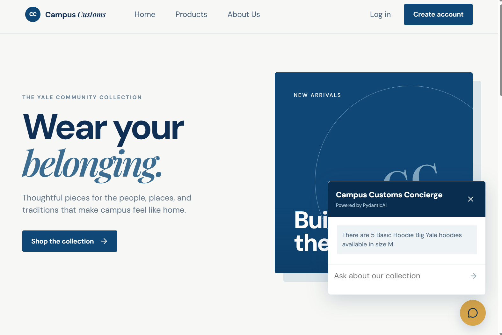
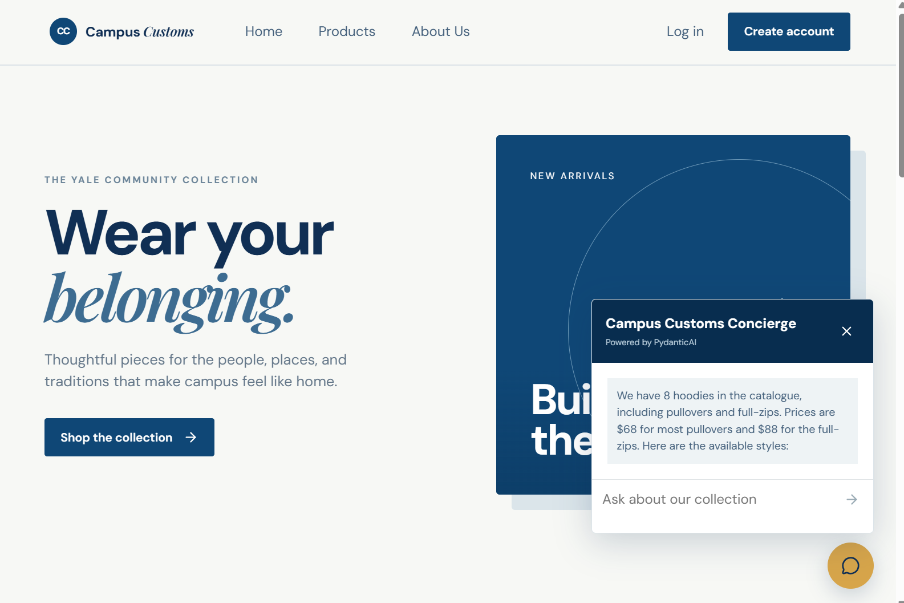
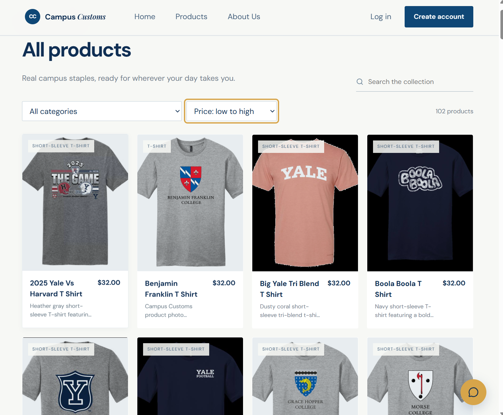

Genuine screenshots captured from the running local application.

The chatbot answers the size-specific inventory question with 5 available in size M for Basic Hoodie Big Yale, matching the database-backed inventory check.

The chatbot returns a real catalogue response for the hoodie category, and the same screen shows the resulting real product cards with images, names, prices, and descriptions.

The Products page visibly applies the Problem 9 usability improvement: price sorting from low to high, while retaining real product images, names, prices, and descriptions.